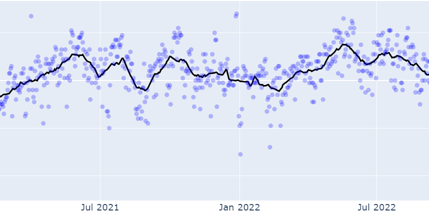
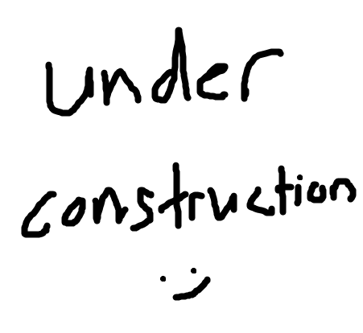

|
Ng Kian Wei I am a full-time data scientist at National University Health System (NUHS) in Singapore. Within NUHS, I manage the technical research and development portfolio for the NUHS Holomedicine Programme, with a focus on mixed reality, applied computer vision and medical image analysis. Working closely with clinicians and other healthcare professionals, many of the research output have or are undergoing transitions to clinical validation and early stage trials to prepare for wide-scale implementation and usage within hospitals. On top of my day job as a data scientist, I am also currently a PhD Student at the National University of Singapore, under the supervision of A/Prof Khoo Eng Tat. About / Blogs & Tutorials / CV / Linkedin |

|
Blogs / Tutorials |
|  |
Practical Signal Processing (Part 1): Frequencies and Filters
[Basics] Covers fundamental concepts involving looking at and manipulating common data types (e.g. time series) from the frequency perspective. Briefly introduces moving averages, convolutions, as well as common downstream applications. |
|  |
Practical Signal Processing (Part 2): 2D Filters and Ideas
[Basics] TBD. |
|
Website template courtesy of jonbarron. |